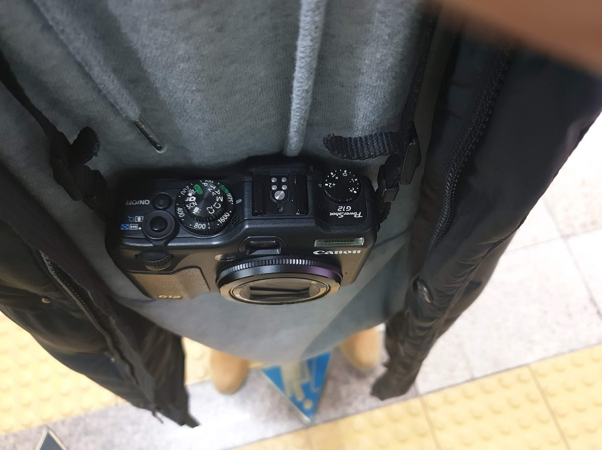
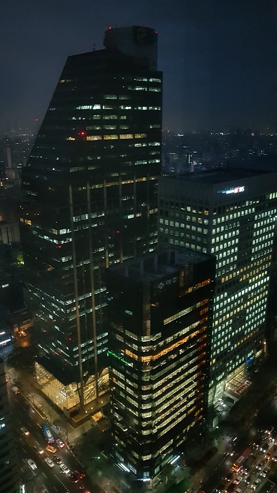
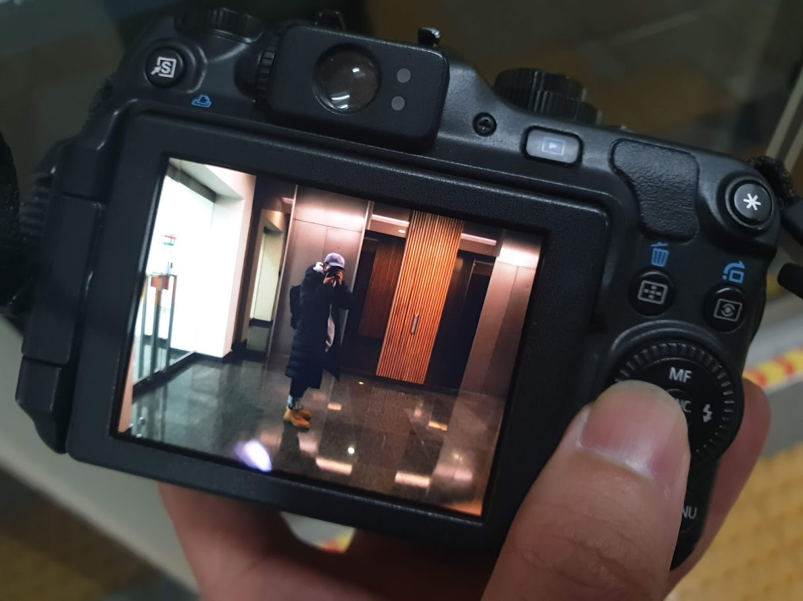
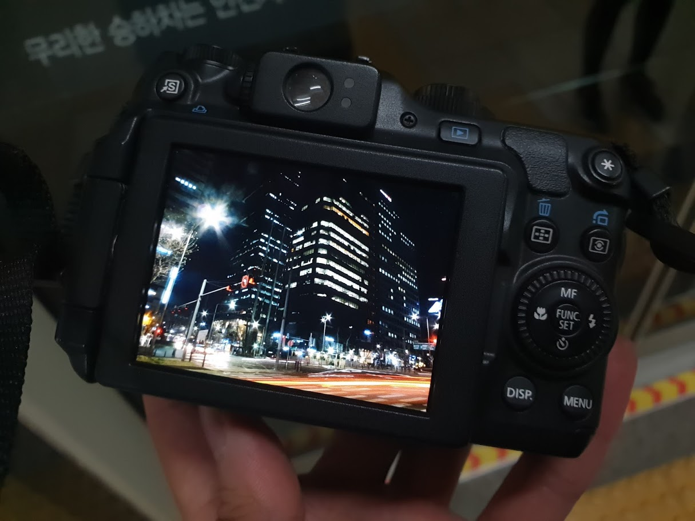

오늘은 최근 구매한 올드 하이엔드 카메라 중 canon g12와 함께 출근했다.

요즘 하이엔드 카메라에서는 느낄 수 없는 수동 카메라 스타일.

근무 중에는 딱히 사진을 못 찍어서 퇴근 하기전 창밖 풍경 한장 찍었다.

엘베 타기전 입구에서 셀프로 한장 더.

지하철 타기전에 조리개, 셔터스피드 조절해서 찍어봤는데 삼각대가 없어서 촬영이 쉽지 않다. ISO 감도는 노이즈를 만들고 싶어서 일부러 좀 올렸는데 생각보다는 느낌이 괜찮은 것 같다.
오랜만에 수동으로 촬영하니까 재밌네, 한동안 카메라 챙겨 다닐 듯.
기록 끝.